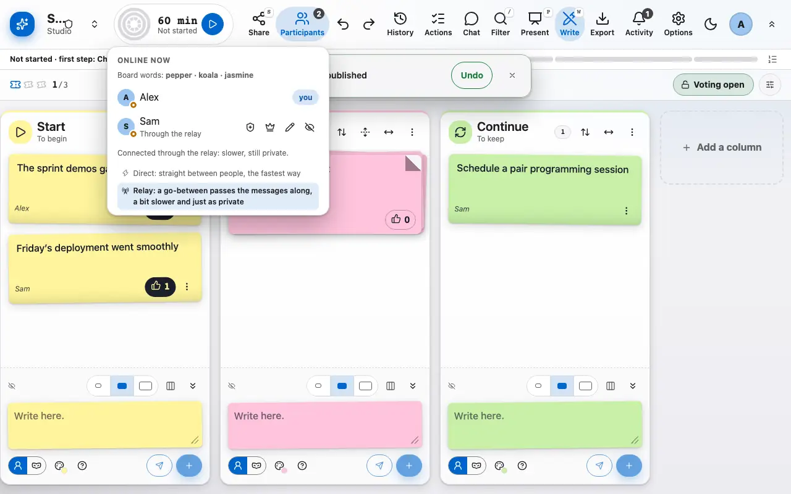
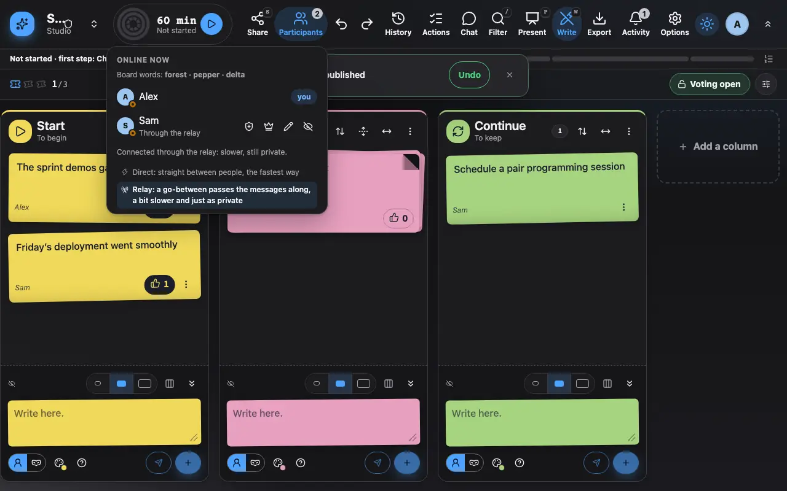
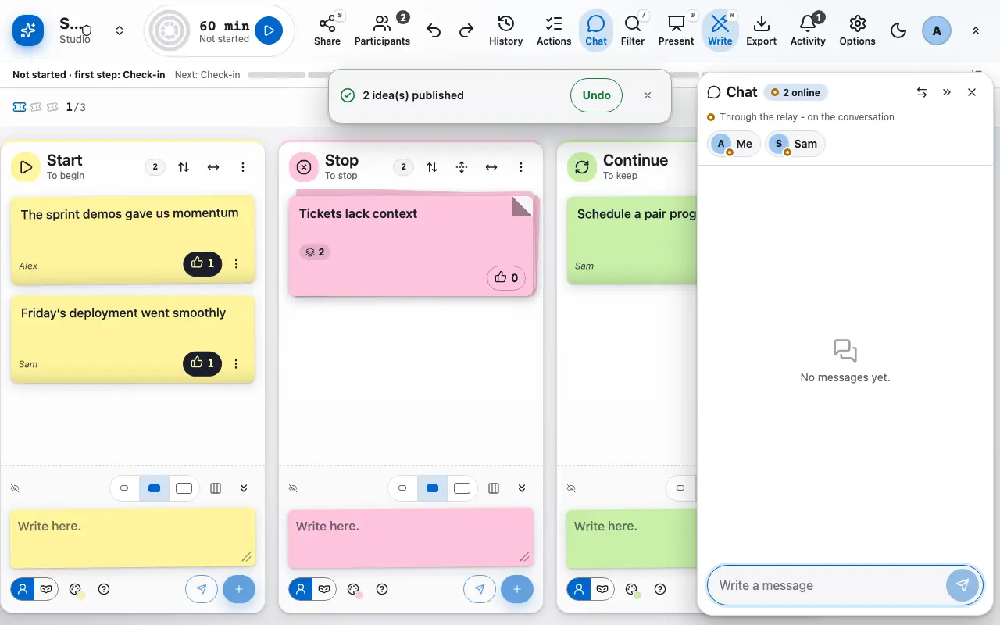
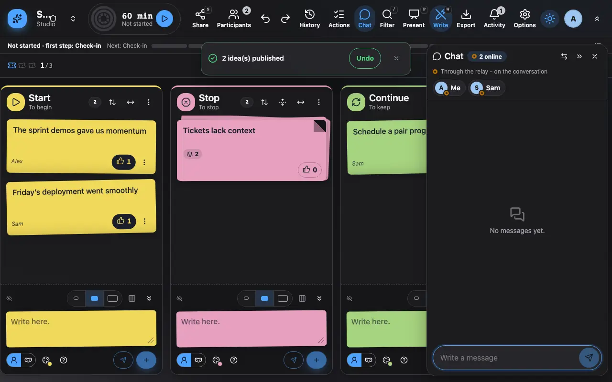

Participants and chat
Who is here, who is typing, and a chat to talk without leaving the board.
1 The participant list shows who is online and their role.
The participant list shows who is online, who is typing right now and in which column, and everyone's role. By default everybody can facilitate; the options let you keep a single facilitator.


2 The board chat is encrypted like everything else.
The board chat lets people talk without leaving the retro. Like everything else it is encrypted and disappears with the board.

